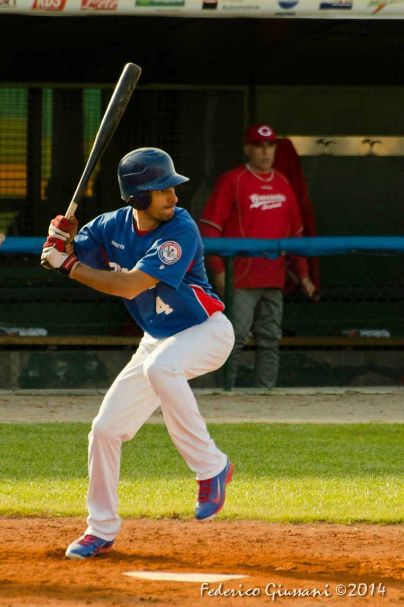
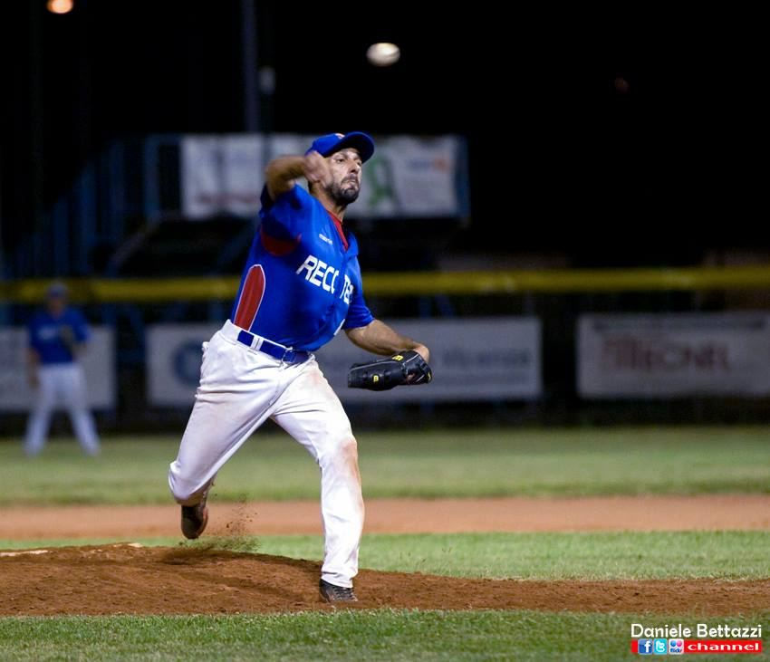

Un arrivo fondamentale per la nostra prima squadra che potrà contare su un atleta con un bagaglio di esperienza molto importante, come dimostrano gli oltre 10 anni trascorsi sui diamanti di Serie A2, IBL2 e A federale.
Il Direttore Sportivo Ciappi ringrazia la società del Livorno Baseball per la collaborazione e si dice molto soddisfatto di questo colpo di mercato, che di fatto completo il roster bianco/blu, ma non esclude che nelle prossime settimane ci possano essere ulteriori movimenti in entrata.
Bosi ha principalmente giocato come esterno, in special modo al centro, è dotato di un ottimo braccio e una corsa sopra la media. In più occasioni è stato chiamato sul monte di lancio uscendo spesso indenne da situazioni difficili.

Si parla di playoff in quanto il suo personale palmares vanta 1 Scudetto con Arezzo nel 2011, una Coppa Italia nel 2015 e una Super Coppa Italiana nel 2016 con Padule.
A Lastra a Signa, Raffaele, ritrova vecchi compagni come Parrini, Vannini e Diaz che lo aiuteranno ad ambientarsi fin da subito; non che questo possa rappresentare un problema in quanto la squadra, come di consueto, ha già accolto lui ed i nuovi arrivati Rudaj e Castillo come compagni e amici di sempre.
Lo staff tecnico, e la società, confidano molto nel contributo che Bosi porterà in campo come giocatore e soprattutto in quello che potrà trasmettere a gli atleti più giovani come persona, siamo certi che la sua avventura con la nostra maglia sarà un bel ricordo e ci auguriamo che duri il più possibile.